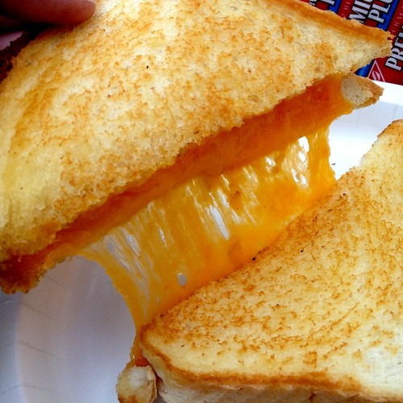

Grilled Cheese

Source: Creative Commons
Indulge in one of your childhood favorites with a classic grilled cheese!
You can never go wrong with a good grilled cheese sandwich.
Recipe
- Prep time: 5 minutes
- Cook time: 5 minutes
- Total time: 10 minutes
Ingredients
Assemble the following:
- 2 slices of cheddar cheese slices
- 2 slices of your favorite white bread
- 2 tsp of butter
- 3 slices of tomato
Prep
- Soften butter
- Butter one side of each slice of bread
- Place one slice of bread in your pan, buttered side down
Cook
- Turn your pan to low-medium heat to start toasting the bread
- Place one piece of cheese on top of the bread
- Place the three tomatos on top of the cheese, spread flat
- Place the second piece of cheese on top of the tomatoes
- Complete the sandwich by placing the final piece of bread on top of the cheese, buttered side up
- After about 3 minutes on low-medium heat, use the spatula to gently lift the sandwich and check the bread.
- When the bread is golden brown, carefully flip the sandwich to toast its other side
- Once both sides of the sandwich are golden brown, use the spatula to move the sandwich onto your plate
- Serve and enjoy!